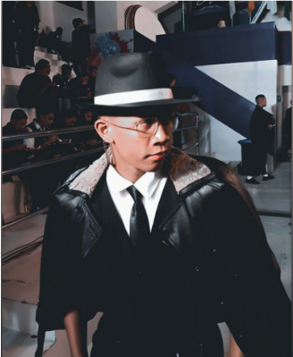
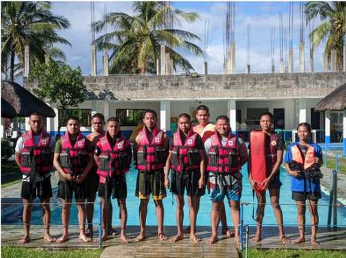
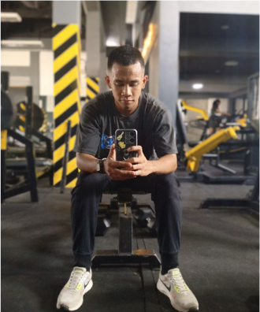

Edwin Jr. G. Lustan was born on October 28, 2005, in Bliss, Bulan, Sorsogon. From an early age, he enjoyed a childhood filled with joy and carefree moments, often spending his time at the beach and playing with his friends. Though he was known for his mischievous side, occasionally stealing money from his family to indulge in his love for video games, those early experiences shaped his personality in significant ways.
Edwin is the third-born of five siblings. His eldest brother, Edmar Lustan, took on the role of a second father, providing discipline, care, and support throughout their childhood. Edwin’s second eldest brother, Edcel Lustan, has always been his mentor, offering wisdom, practical advice, and guidance on navigating life's challenges. Edcel has been a constant source of support, whether it’s helping with schoolwork or providing personal insight. Edwin’s third sibling is Marwin Lustan, who serves as a best friend, offering companionship and shared laughter. Lastly, his youngest sibling, Wincel Lustan, brings joy and positivity to the family, brightening even the toughest moments. Together, his siblings have had a profound influence on his life, shaping his character and providing a strong support network.

Currently, Edwin is pursuing a Bachelor of Science in Criminology at Sorsogon College of Criminology Incorporated. His academic journey is complemented by his active participation in extracurricular activities such as ROTC, PathFit, and volunteering. These activities have allowed him to balance his academic pursuits with a desire to contribute to his community. Edwin is passionate about fitness and enjoys activities like going to the gym, running, biking, and gaming. He has always had a sense of adventure and enjoys exploring new things, whether through physical activities or reading graphic novels. His interests developed over time, some from his childhood, while others blossomed as he sought new experiences.
Known for his determination, compassion, and adventurous spirit, Edwin values honesty, hard work, and perseverance. His guiding principles are rooted in respect for others and a constant drive for personal growth. He has faced challenges, including balancing his studies with personal responsibilities and overcoming self-doubt, but through focus and the support of his loved ones, he has learned to persevere and maintain a positive outlook. Among his proudest achievements is excelling in his criminology studies while actively engaging in extracurricular activities. These accomplishments reflect his commitment to discipline, learning, and making a meaningful impact in his community.
Edwin finds motivation in his family, who continuously support him and encourage him to pursue his goals. His ultimate goal is to build a meaningful career in criminology, with aspirations to work in law enforcement or public service. The drive to make a difference in his community and to continuously improve himself is what keeps him moving forward. In his daily life, Edwin engages in various community activities and events, from volunteering to other public service efforts, aiming to give back and connect with others. His family plays a central role in his life, and he enjoys spending quality time with them through shared activities, meaningful conversations, and simply enjoying one another’s company.
Looking ahead, Edwin's short-term goal is to excel academically in his BS Criminology program and gain practical experience through internships and volunteer work. Long-term, he aspires to build a career in law enforcement, become a subject matter expert in criminology, and pursue further studies to enhance his expertise. He envisions himself growing both personally and professionally, becoming more resilient, effective as a leader, and a positive influence in his community. Ultimately, Edwin hopes to make a lasting impact by advocating for justice, contributing to public safety, and inspiring others to serve their communities with responsibility and dedication.

